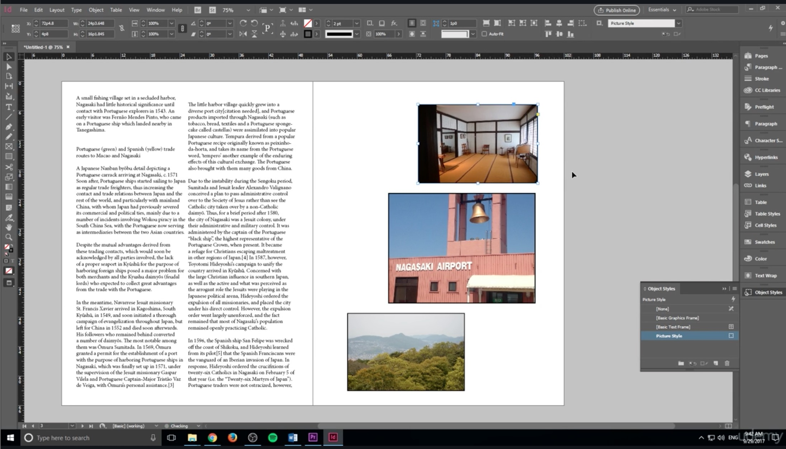

Adobe InDesign
History
InDesign is the successor to Adobe PageMaker, which was acquired by Adobe with the purchase of Aldus in late 1994. (Freehand, a competitor to Adobe Illustrator and also made by Aldus, was sold to Altsys, the maker of Fontographer.) By 1998 PageMaker had lost almost the entire professional market to the comparatively feature-rich QuarkXPress 3.3, released in 1992, and 4.0, released in 1996. Quark stated its intention to buy out Adobe[3] and to divest the combined company of PageMaker to avoid anti-trust issues.
Adobe rebuffed the offer and instead continued to work on a new page layout application. The project had been started by Aldus and was code-named "Shuksan". It was later code-named "K2" and was released as InDesign 1.0 in 1999.
InDesign was the first Mac OS X-native desktop publishing (DTP) software. In version 3 (InDesign CS) it received a boost in distribution by being bundled with Photoshop, Illustrator, and Acrobat in the Creative Suite.

>